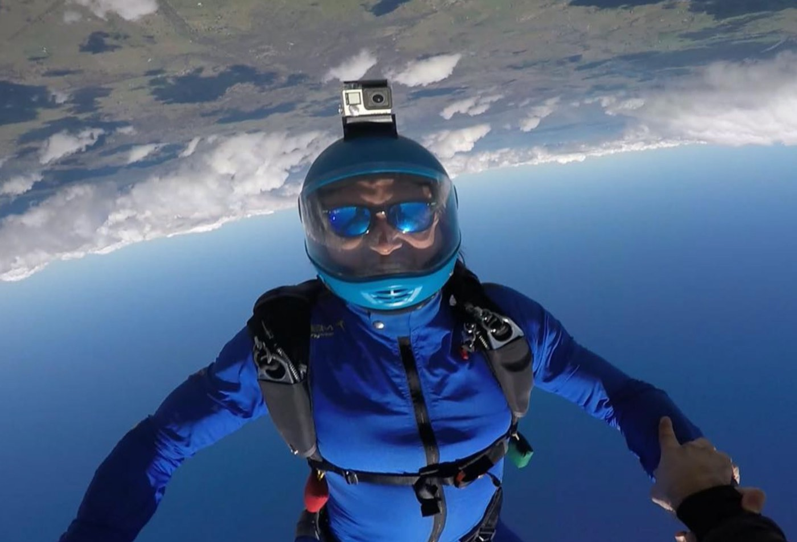

A programme for school leavers
First Summer
Schoolies lasts a week. The summer lasts twelve. What you do with them sets the shape of the next ten years more than your ATAR does.
The idea
You've just finished thirteen years of being told where to be. Now nobody's telling you anything, you've got more energy than you know what to do with, and the most interesting thing on offer is the party.
There's nothing wrong with you for wanting intensity. That drive is an asset. The trouble is that alcohol and drugs are the easiest place to spend it, and they get to most people before anything better does. I found them first. It cost me a decade.
First Summer is a way to get something better in first. Twelve weeks, three phases, one aim: finish the summer with a sport you're hooked on and a crew you do it with.
Sample
Four coached tasters, one a week, from different families: water, mountain, mat, wheels, sky. No commitment. You're shopping.
Commit
Pick the one you couldn't stop thinking about. Join the club or gym, train twice a week, learn people's names.
Send
Set a goal with a date on it that scares you slightly. A comp, a summit, a first solo, a qualification. Then go and do it.
Five rules
- Coached first. Every taster is a proper intro session with a qualified instructor. No teaching yourself off YouTube.
- Borrow before you buy. Hire it, borrow it, use the club's. Spend nothing on gear until week five.
- Sober is the safety case. You can't surf, climb, roll or ride well with a hangover, and in most of these sports you can't do it safely either. The sport sets the rule so you don't have to.
- One mate in. Start with at least one other person. Send them the pact link.
- One adult knows. A parent, a coach, a teacher. Someone who knows what you're doing and will ask how it went.
Start here
- Why it works: the scienceSensation seeking, Iceland, natural highs, and the honest caveats.
- Find Your ThingSix questions. Four sports matched to your kind of rush.
- The sports menuTwelve sports. What each costs, the first step, and who you'll meet.
- Your 12-week planThe programme, week by week, with a tracker.
- For schools, parents and clubsHow to back it or run it with a group, without taking it over.
What it is and isn't
- It's free and self-guided. There are no staff, camps or fees. You book your own sessions with local clubs and providers.
- It's for anyone roughly 16 to 20 who is finishing school or has just left. If you're under 18, most providers will need a parent's consent.
- It isn't treatment. If you're already drinking or using more than you want to, start with Stage 1 or go to Help now, and do this as well.
- It isn't anti-fun. It's a bet that the best nights of your life will be early mornings.
Two minutes
Find your thing
Six questions about the kind of rush you're after. You'll get four sports to sample, matched to you.
Take the quiz